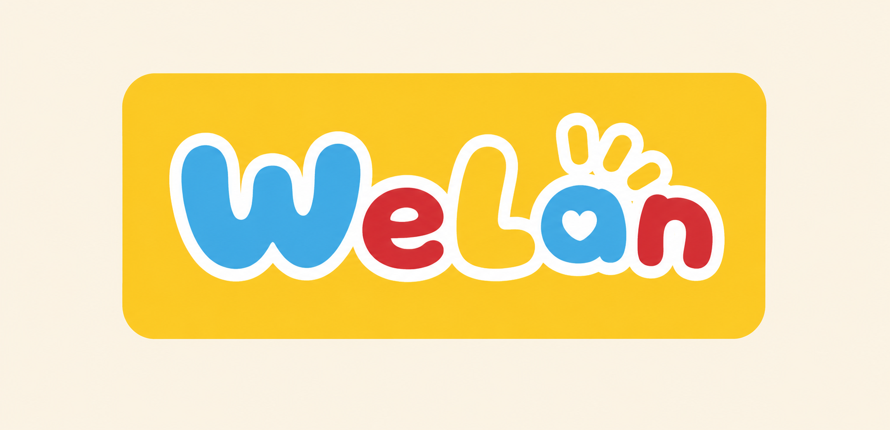

原型 · 欢迎页 v2（白色手写体标语 + 提亮按钮/条款）
9:41

WeLan
懂你的 PMS 陪伴助手
每天 10 秒，让身体被看见、被理解
注册，开启陪伴
我已有账号，登录
注册即代表同意
《用户协议》
与
《隐私政策》
本次改动（原型示意，未改主代码）
① 删掉顶部云朵 mascot，只留 WeLan logo。
② 标语「懂你的 PMS 陪伴助手 / 每天 10 秒…」灰 →
白色
（默认字体，不用手写体）。
③ 「注册，开启陪伴」→
白底 + 天蓝字
（在绿底上最跳）。
④ 「我已有账号，登录」灰蓝 →
白描边 + 白字
，清晰不抢主按钮。
⑤ 条款文字灰 →
白色
，链接加下划线。
说明
：logo 仍带你原图里的黄块（外层米黄底待你手动去掉后会更干净）。手写体依赖系统自带中文手写字体（Mac 有手札体/行楷）。
满意的话回我「同意」，我再把这些改进写进 index.html 的欢迎页。